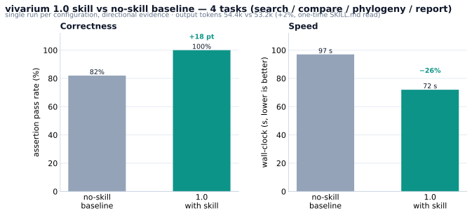
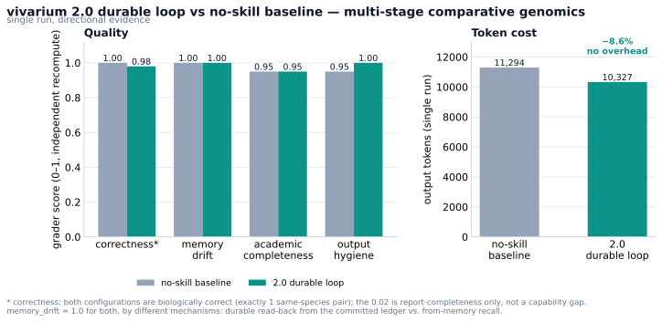
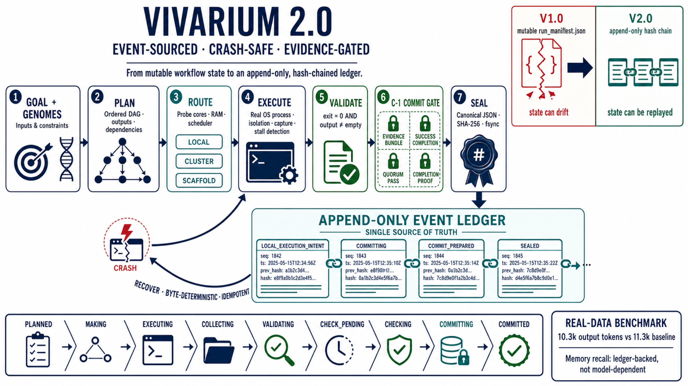

提交前验证
进程正常启动并不等同于阶段成功。仅当退出状态、预期产物与持久化证据均满足约束时，阶段方可提交。
vivarium 为 Claude Code 与 Codex 提供比较基因组分析工作流：将研究目标解析为有序阶段，调用真实生物信息学工具，对阶段产物实施提交前校验，并依据持久化账本恢复中断任务。
同等支持 Claude Code + Codex

对使用者而言，完整流程由分析规划、资源路由、工具执行、证据提交与状态恢复五个阶段构成。
依据研究目标定义阶段顺序、输入对象、工具需求、依赖关系与预期产物。
探测 CPU、内存、已安装工具与集群调度器，据此选择本地执行、集群作业脚本或外部执行命令。
在隔离进程中调用生物信息学工具，并检查退出状态、标准输出、标准错误与预期产物。
将产物、精确命令、工具版本与校验记录绑定到阶段，并在通过提交闸门后追加写入账本。
从已验证事件重建流程状态，对已提交阶段保持幂等，并从首个未完成阶段继续执行。
进程正常启动并不等同于阶段成功。仅当退出状态、预期产物与持久化证据均满足约束时，阶段方可提交。
流程状态由同一事件账本按字节重建；已提交阶段保持幂等，恢复过程不重复执行这些阶段。
结果汇报读取已经校验并密封的计算产物与事件记录，不以语言模型的会话记忆作为数值依据。
资源可容纳的阶段可在本地执行；计算密集型阶段生成可审计的集群作业脚本。当前版本不自动提交或轮询集群作业。
理解目标、组织阶段、驱动 2.0 持久化流程。
完整流程组装统计、质量评估和基因功能注释。
质控与注释ANI、AAI、直系同源关系和基因组共线性。
基因组比较序列比对、修剪、系统发育树和选择分析。
系统发育BLAST、DIAMOND 和 HMMER 序列检索。
序列搜索标准化图表、表格、方法记录和多格式导出。
报告与出图基准所使用的输入、运行记录、原始输出与评分依据均保存在仓库 benchmark/ 目录中。


这些数值仅适用于仓库记录的任务、数据、工具版本、模型和执行环境，不构成跨模型或跨工作流系统的普遍排名。
下面的机制图展示 PLAN、ROUTE、EXECUTE、VALIDATE、C-1 GATE、SEAL 与 RECOVER 如何组成一个可恢复闭环。

点击查看 4K 原图 ↗受限 RFC 8785/JCS 规范化 JSON、域分隔 SHA-256 摘要和仅追加 JSONL；未完成尾行会被隔离。
证据包、成功完成记录、quorum pass 和完成证明必须全部一致，失败或空产物不得密封。
指由同一账本按字节重建流程状态，不承诺不同系统、硬件或工具版本产生位级一致的分析结果。
Claude Code 与 Codex 获得同等支持，并使用同一组六项工作流契约。
在 Claude Code 中依次执行以下三条命令。
/plugin marketplace add Jason-0409-G/vivarium
/plugin install vivarium@vivarium
/reload-plugins把下面整段请求粘贴到 Codex。必须保留 --ref master。
Use $skill-installer to install these paths from repo Jason-0409-G/vivarium using --ref master:
skills/vivarium
skills/vivarium-prep
skills/vivarium-compare
skills/vivarium-phylo
skills/vivarium-search
skills/vivarium-report脚本会先备份已有同名技能，再写入新副本。
git clone https://github.com/Jason-0409-G/vivarium.git
cd vivarium
bash install.sh --target claude # Claude Code
bash install.sh --target codex # Codex
bash install.sh --target both # both clients当前 full 目标覆盖组装统计、功能注释、ANI、AAI、直系同源关系、基因组共线性、系统发育树与热图生成。各阶段仍受工具可用性、输入完整性和资源路由约束。
/vivarium:vivarium 请对 ./genomes 运行 vivarium 2.0 完整持久化流程。使用 full 目标，先输出 DAG 与本地/集群路由，再执行可就地阶段；将状态写入 ./vivarium_store。遇到 cluster 或 scaffold 阶段时暂停，并返回确切命令、预期产物与回收位置。Codex 用户将命令前缀改为 Use $vivarium 即可。
后续版本依据真实数据基准、跨端兼容性验证和用户反馈增量发布。未完成能力会在路线图和发布说明中明确标记。
集群作业脚本生成已实现；自动提交和轮询尚未实现。vivarium 不自动安装软件或数据库，也不修改用户分析环境。
Claude Code 与 Codex 使用同一套分析技能和持久化工作流契约；安装方式不同，功能边界保持一致。